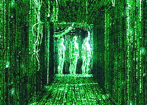
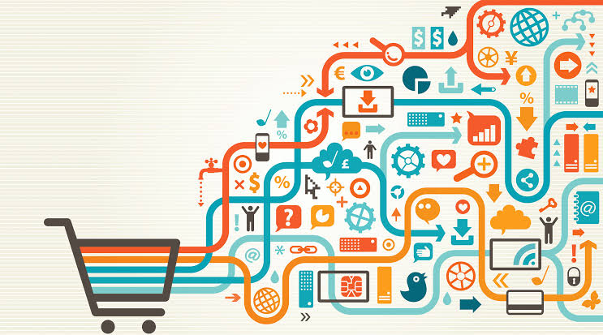

A Internet das Coisas ou Internet of Things (IoT) é um dos principais assuntos relacionados a revolução tecnológica.
É um fenômeno atual, mas que se desenvolve e desenha o nosso futuro de uma forma inédita. Ela transforma a nossa
relação com a tecnologia e muda o modo como interagimos com o mundo e também como o mundo interage com a gente.
Em outras palavras, a Internet das Coisas significa o modo como os objetos físicos estão conectados e se comunicam
entre si e com o usuário, através de sensores e softwares que transmitem informações para uma rede. É igual a um
sistema nervoso que ajuda na troca de informações entre dois ou mais pontos.
Mas como o mercado está em relação ao cenário da Internet das Coisas? Neste post, vamos falar sobre 10 tendências
em Internet das Coisas até 2022. Quer ficar por dentro do assunto? Acompanhe o nosso artigo!

A criação digital de coisas que nunca existiram por meio de imagens, vídeos e outros recursos digitais é uma tendência da Internet das Coisas até 2020. A Gartner, maior empresa de consultoria tecnológica, prevê a criação de uma espécie de realidade falsa que vai superar a capacidade da Inteligência Artificial (IA) de detectá-la. Esse conteúdo é produzido por máquina e deve seguir a tendência dos últimos anos de gerar conteúdos alterados e criar desconfiança.
Voltar ao topo!
As gigantes digitais Amazon, Apple, Baidu, Facebook, Google, Microsoft e Alibaba terão dificuldades de criar novos cenários de valor por causa da sua capacidade de influência. No entanto, destruir esse protagonismo pode ser uma decisão arriscada. Porém, essa é a única maneira de evitar a estagnação. Por outro lado, a condição de liderança dessas organizações poderia levá-las a destruição em um prazo de tempo mais longo, sem que elas fossem aproveitar a oportunidade de preencher seu espaço no mercado.
Voltar ao topo!
As criptomoedas ainda são vistas com desconfiança pelas empresas líderes do mercado financeiro. Contudo, a partir do momento que os bancos começarem a percebê-las como um atrativo digital de valor, eles serão estimulados pelo crescimento do volume de transações, aumentando o valor comercial desses negócios.
Voltar ao topo!
A Inteligência Artificial (IA) pode acabar com várias profissões. Mas não se preocupe! Isso vai se reverter até 2020. Obviamente, essa relação pode variar dependendo do segmento que será analisado. Em alguns casos, poderá ocorrer a perda total de empregos. Em outros, terá um balanço positivo.
Voltar ao topo!

A IoT será incorporada por 95% dos eletrônicos até 2020. Essa informação é da Gartner. A utilização da IoT será estimulada pelo uso combinado com gerenciamento de smartphones, diminuição de dispositivos e controle em nuvem.
Voltar ao topo!

Para 2021, a previsão é de que a receita cresça em 30% nos e-commerces que tiverem um layout para pesquisas visuais e de voz. Essas pesquisas deverão ser mais específicas e contextualizadas, uma vez que a interação entre o usuário e a máquina ocorre de maneira mais natural. Dessa forma, é possível captar as intenções dos consumidores e seus interesses. Com isso, os dispositivos móveis serão ainda mais tecnológicos e por isso vão favorecer as marcas pioneiras na adaptação de SEO a essas formas de pesquisa contextualizada. De acordo com a Gartner, uma receita de US$ 3,5 bilhões será impulsionada pela demanda dos dispositivos de voz até 2021. Além disso, a disponibilização de sistemas de devoluções por meio de dispositivos terá uma grande influência na competitividade das empresas de comércio eletrônico.
Voltar ao topo!

O investimento em robôs interativos será maior que os recursos aplicados no desenvolvimento dos aplicativos móveis tradicionais. Isso porque esses recursos são a interface da IA e afetarão todas as áreas nas quais existe uma interação entre as pessoas. Além disso, essa tecnologia assume tarefas padronizadas e libera os profissionais para interações de maior qualidade e menos operacionais.
Voltar ao topo!
Outra tendência em Internet das Coisas até 2022 é que ao menos 40% das equipes de Tecnologia de Informação (TI) assumirão vários papéis, sendo a maioria relacionada à área de negócios e não de tecnologia. Para o próximo ano, as contratações de especialistas vão cair em mais de 5%, para atender a demanda por profissionais mais versáteis. A mudança tende a começar por áreas de infraestrutura e operações, para suprir a demanda por maior entrada e saída de dados. Depois será a vez dos setores de marketing, desenvolvimento de software, inteligência de negócios, arquitetura de experiência do cliente, gerenciamento de produtos digitais e de projetos.
Voltar ao topo!
A previsão da Gartner é que as fake news (notícias falsas) vão continuar. O problema não será solucionado com facilidade. No entanto, as marcas precisam ficar atentas ao impacto dessas notícias, para além do aspecto jornalístico. As empresas terão que desenvolver mecanismos que servirão para fazer um monitoramento de perto e em tempo real sobre o que está sendo dito por elas. É preciso enfatizar que não será uma guerra analógica, pois grande parte dessas notícias estará sendo produzida por Inteligência Artificial com capacidade de aprendizado. Isso fará com que os contextos sejam analisados e em que conteúdo digital será publicado.
Voltar ao topo!
Ao considerar um rápido crescimento de uso da IoT, a previsão da Gartner é que ocorra maior incidência de acidentes e falhas. E isso é fácil de imaginar se a maior parte do mercado utilizar a tecnologia de uma hora para a outra. A consequência é que os investimentos para segurança sejam voltados para solucionar os problemas. Outro problema será a incapacidade de executar as atualizações dos dispositivos em tempo certo, o que impactará ainda mais na segurança dos indivíduos do que das empresas. Isso irá pressionar o aumento de regulações.
Voltar ao topo!